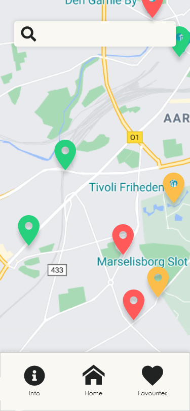

SafeToGo
UI, UX, JavaScript, API
SafeToGo is a project based on a real life experience where people with weaker
immunity were forced to avoid crowds and protect themselves against Covid19.
However, it is not possible to avoid interaction with other people on daily basis. In order to help
our target audience interact safely, we created a digital solution showing crowdedness status in
public spaces at exact moment as well as in general during opening hours.

Functionalities
Onboarding pages inform users how to navigate in the app.
After that users continue to home page where they can search for different
locations on the map and display details about each.
After expanding details section users can see gradient bar reporting exact situation in current
place.
Below that, graphs inform users about crowdedness status during opening hours.
In the bottom users are able to activate the notifications and be informed when the crowdedness
density gets low.
Users are also able to save their favourite locations.
In case users need to check the latest information regarding Covid19 they can do so in the Info
section along with the restrictions guidelines.

Colour coding
In order to differentiate various crowdedness statuses we implemented a
colour coded elements according to the current situation in an exact place. When choosing colours
we opted for traditional way of displaying awareness by using red, safety with green and medium
status with yellow on the map markers as well as details showing container.

API
In this project we used two different APIs. For displaying map and
address of the place the app is fetching data from Mapbox API.
In order to display actual situation we used API from BestTime. The app is fetching live forecast
and using its value we were able to adjust colour coded system along with position of location icon
in the gradient bar, which inform users about current crowdedness status in exact destination.
Using crowdedness values during opening hours we implemented a graph displaying status of a place
throughout the day.
← Previous project
Next project →